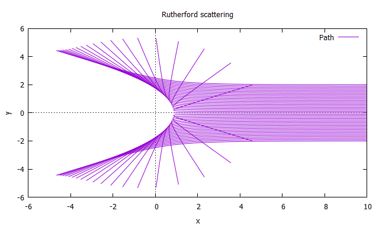

I'm Contrail, a Physics student.
about
Hello, my name is Contrail, a student of an university. Currently studying nuclear physics, especially on computer simulations of nuclei collisions. Fluent in English and Japanese, able to read and write in German.
I've been coding since I was in an elementary school. I have experience with C#, C, C++, BASIC, VBASIC, PYTHON 2, PYTHON 3, FORTRAN 90/95, JAVA, HTML, JAVASCRIPT, CSS. Solid knowledge in Newtonian mechanics, Electromagnetism, Analytical mechanics, Quantum physics, Special relativity, Statistical mechanics, Fluid dynamics. I have deep interest in the concept of how this world is made, how nature works, how microscopic phenomena emerge as a large scale.
Here's some examples from my simulations!
Time development of Two dimensional wave
Rutherford Scattering (Scattering of electrons subjected to a proton) 